Overview
This project implements image alignment techniques to reconstruct color images from digitized glass plate photographs. The Prokudin-Gorskii collection contains three color-separated channels (red, green, blue) stacked vertically that need to be aligned to create the final color image.
Alignment Methods Implemented:
- Single-Scale: Direct exhaustive search over shift offsets
- Multi-Scale: Image pyramid with NCC/L2 scoring
Single-Scale Alignment
Approach
Results on Provided Images
Target Images: cathedral, monastery, tobolsk
Cathedral
Original (Misaligned)

Aligned Result
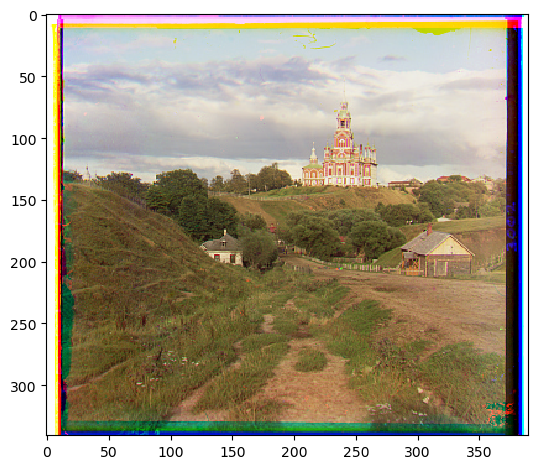
Green Offset: (5, 2), Red Offset: (12, 3)
Monastery
Original (Misaligned)

Aligned Result
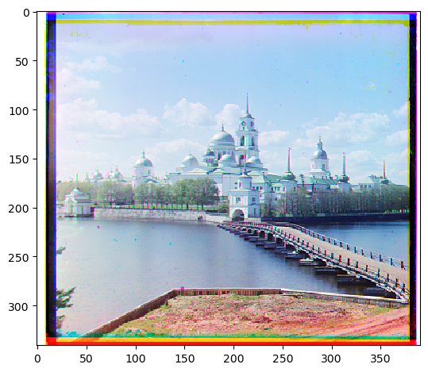
Green Offset: (-3, 2), Red Offset: (3, 2)
Tobolsk
Original (Misaligned)

Aligned Result
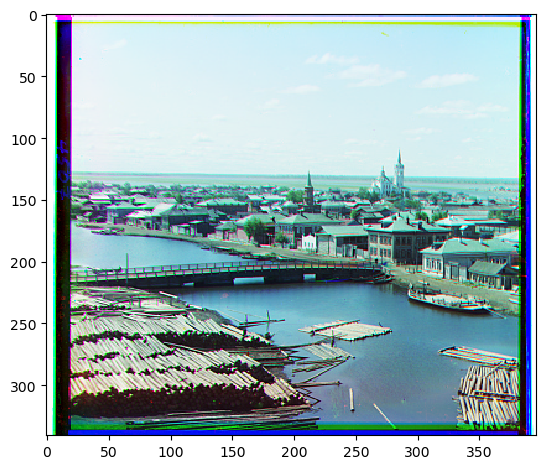
Green Offset: (3, 3), Red Offset: (6, 3)
Analysis
Multi-Scale Pyramid Alignment (40 Points)
Motivation & Approach
Scoring Metric: NCC vs L2
NCC = sum((im1 - mean(im1)) * (im2 - mean(im2))) / (std(im1) * std(im2))
L2 Formula:
L2 = sqrt(sum((im1 - im2)^2))
Algorithm Details
- How do you build the image pyramid?
- Start at which level? Why?
- How do you search for offsets at each level?
- How do you use coarser-level results to guide finer levels?
- What's your termination condition?
Results on All 17 Images
Test Set: 14 provided images + 3 custom images you selected
Sample Results Grid
Cathedral
Green Offset: (5, 2), Red Offset: (12, 3)
Monastery
Green Offset: (-3, 2), Red Offset: (3, 2)
Tobolsk
Green Offset: (3, 3), Red Offset: (6, 3)
Church
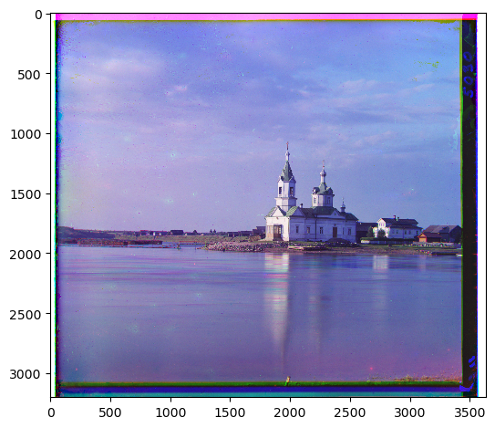
Green Offset: (3, 24), Red Offset: (-4, 58)
Icon
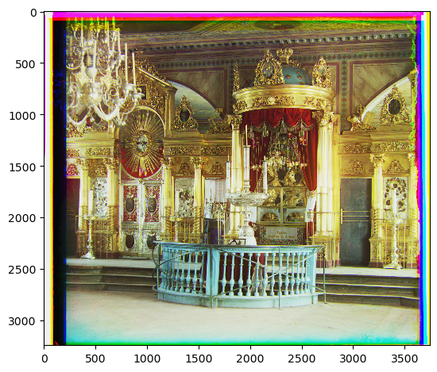
Green Offset: (18, 41), Red Offset: (23, 89)
Emir
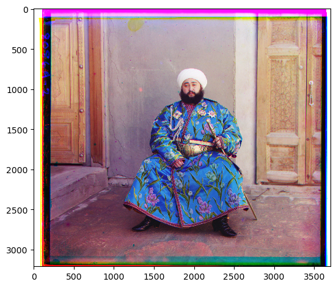
Green Offset: (18, 41), Red Offset: (23, 89)
Harvesters
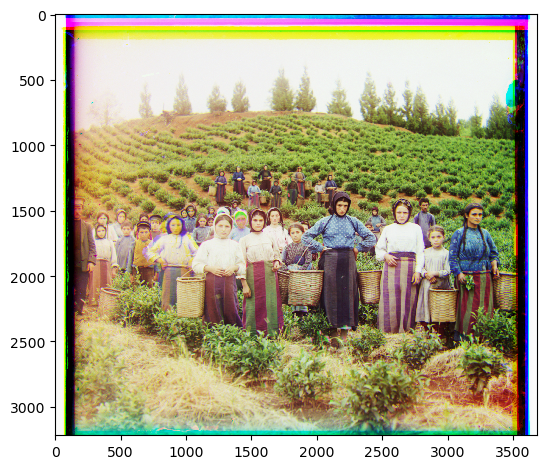
Green Offset: (18, 59), Red Offset: (15, 124)
Ilemselga
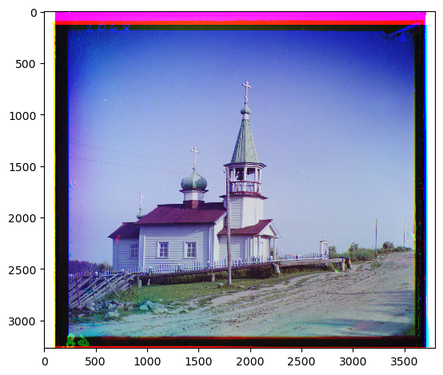
Green Offset: (7, 41), Red Offset: (11, 131)
Self_portrait
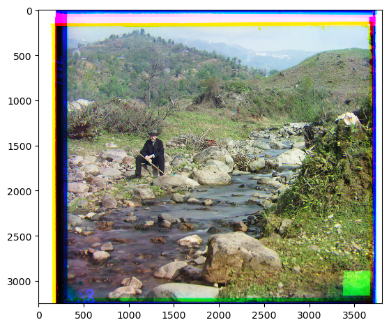
Green Offset: (29, 77), Red Offset: (36, 175)
Religous_painting
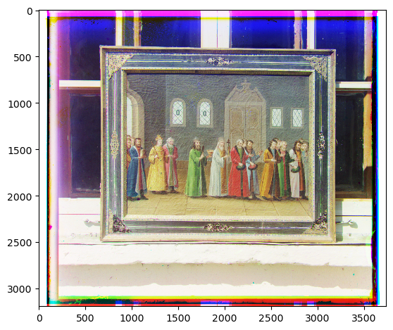
Green Offset: (4, 27), Red Offset: (7, 69)
Siren
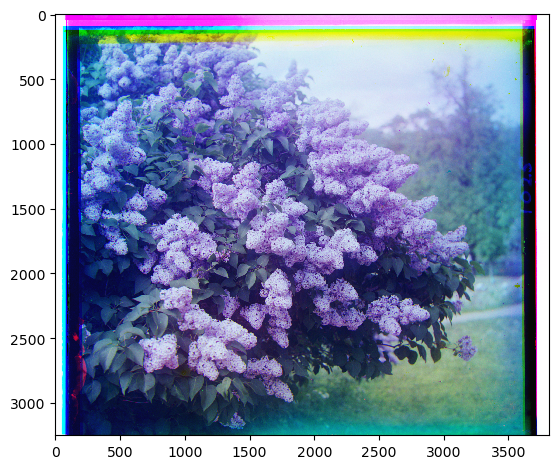
Green Offset: (-4, 49), Red Offset: (-23, 96)
Generations
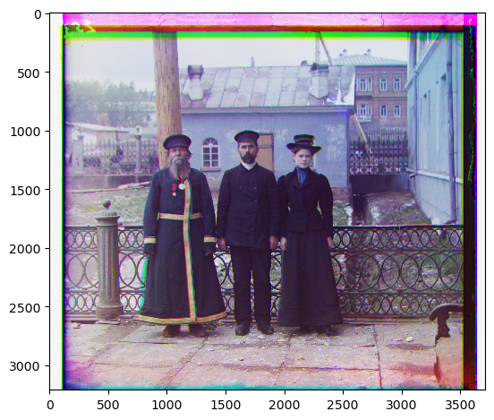
Green Offset: (17, 50), Red Offset: (13, 105)
Wharf
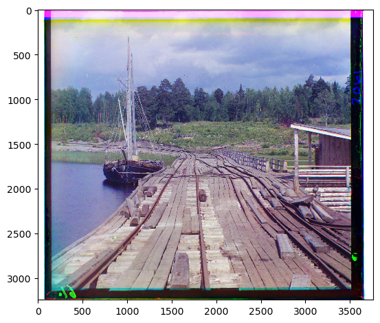
Green Offset: (17, 50), Red Offset: (13, 105)
Melons
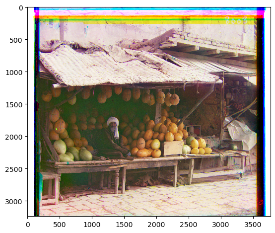
Green Offset: (17, 50), Red Offset: (13, 105)
Analysis & Insights
- How many images aligned without defects? (Goal: ≥16/17 for full credit)
- Which images were hardest to align and why?
- Did NCC/L2 choice matter for certain images?
- Did pyramid levels help find large offsets?
- Any edge cases or interesting failures?
Custom Images (3 Required)
You need to select or create 3 custom images to align. These can be digitized plates in the same format (three channels stacked vertically) or images you create yourself.
- Image 1: [Prokudin-Gorskiĭ]
- Image 2: [Brick building with arched entrance and arcade]
- Image 3: [Sacks stacked in storage room, pulley system machinery mounted along wall]
Custom Image Results
Custom Image 1

Green offset: (-11, 33), Red offset: (-27, 139)
Custom Image 2

Green offset: (-11, 42), Red offset: (-26, 98)
Custom Image 3

Green offset: (22, 52), Red offset: (13, 123)
Key Insights & Lessons
- What made alignment difficult on certain images?
- How did pyramid levels improve alignment?
- Edge cases or surprising discoveries?
- Computational performance observations?
- What would you do differently next time?